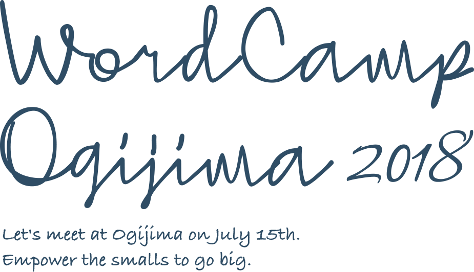

アクセシブルな
セッションスライド
スライドURL
もう後回しにしない！明日からできる
自作テーマ・受託プロジェクトの
アクセシビリティ入門2018
WordCamp Ogijima 2018
自己紹介

【 1ページ 】
自己紹介

【 2ページ 】
今日お話しすること
【 3ページ 】
質問です。
皆さんのお手元にあって、もっとも身近に
アクセシビリティを確認できるツールは
なんでしょうか？
【 4ページ 】
答え
Voice Over
（Android端末の方、ごめんなさい…）
【 5ページ 】
そこで疑問
あれ、ちゃんと読み上げられてるなら、
アクセシビリティに対応できてるってこと？
【 6ページ 】
答え
そうです！
セマンティックにコーディングしていれば、
アクセシビリティ対策は難しくありません！！
【 7ページ 】
WordPressのアクセシビリティ
WordPressはコア自体から
アクセシビリティに対応しています。
【 8ページ 】
テーマのアクセシビリティ
デフォルトテーマはWCAG 2.0に準拠しています。
- Web Content Accessibility Guidelines 2.1
- 「アクセシビリティ」対応テーマ
- 「アクセシビリティ対応」タグのあるテーマは
アクセシビリティチームがチェックしています
【 9ページ 】
アクセシビリティ対応のための
プラグイン
【 10ページ 】
また質問
それならば、自作テーマをアクセシビリティ対応
させたいときに必要なのは？
【 11ページ 】
自作テーマ作成時の注意点
【 12ページ 】
セマンティックにコーディングする
【 13ページ 】
代替テキスト
【 14ページ 】
代替テキスト
<img width="1200" height="630" src="https://2018.ogijima.wordcamp.org/files/2018/04/01.jpg"
class="attachment-twentyseventeen-featured-image size-twentyseventeen-featured-image wp-post-image"
alt="" srcset="https://2018.ogijima.wordcamp.org/files/2018/04/01.jpg 1200w,
https://2018.ogijima.wordcamp.org/files/2018/04/01-300x158.jpg 300w,
......
【 15ページ 】
代替テキスト
<img width="1200" height="630" src="https://2018.ogijima.wordcamp.org/files/2018/04/01.jpg"
class="attachment-twentyseventeen-featured-image size-twentyseventeen-featured-image wp-post-image"
alt="実行委員長挨拶" srcset="https://2018.ogijima.wordcamp.org/files/2018/04/01.jpg 1200w,
https://2018.ogijima.wordcamp.org/files/2018/04/01-300x158.jpg 300w,
......
【 16ページ 】
代替テキスト
<img width="1200" height="630" src="https://2018.ogijima.wordcamp.org/files/2018/04/01.jpg"
class="attachment-twentyseventeen-featured-image size-twentyseventeen-featured-image wp-post-image"
alt="両手を大きく広げて満面の笑みを浮かべるWordCamp男木島実行委員長の西川さんと男木島の青空"
srcset="https://2018.ogijima.wordcamp.org/files/2018/04/01.jpg 1200w,
https://2018.ogijima.wordcamp.org/files/2018/04/01-300x158.jpg 300w,
......
【 17ページ 】
JIS X 8341-3:2016への準拠
『高齢者・障害者等配慮設計指針 － 情報通信における機器、
ソフトウェア及びサービス － 第3部：ウェブコンテンツ』
- 対応国際規格『ISO/IEC 40500:2012』（W3C勧告『WCAG 2.0』）と一致した内容
- 総務省ウェブアクセシビリティ方針
- JIS X 8341-3:2016 試験実施ガイドライン（達成基準チェックリストの例）
【 18ページ 】
role属性、aria属性の活用
- role属性
- 要素に役割を付与するもの
【 19ページ 】
role属性、aria属性の活用
-
- role="banner"
- 主にheaderに付与される
-
- role="main"
- メインコンテンツに付与される
-
- role="navigation"
- ナビゲーションに付与される
など
【 20ページ 】
role属性、aria属性の活用
- aria属性
- アクセシビリティ情報をマシンリーダブルに『拡張』するもの
【 21ページ 】
role属性、aria属性の活用
-
- aria-label=" *** "
- ラベルを付与して区別がつきやすいよう明示
-
- aria-hidden=" *** "
- マシンに認識させるかどうか明示
-
- aria-required=" *** "
- フォームの入力項目が必須かどうか明示
など
【 22ページ 】